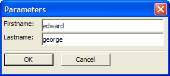

Prompting for User Input
When you use variables in an expression, you can use a special type of variable that prompts you for a value when the expression is evaluated. These variables, called Ask variables, can be used just like any other variable. When Alpha Five encounters an Ask variable, an input dialog box appears requesting that you type in a value. The expression result will depend upon the value you enter. The outcome of a query, the filter expression for an export, and the value of an update expression are all examples of operations and expressions which can be based on an Ask variable.
For more information, see ASK Variables.
Ask Variables
Ask Variables are used to prompt users for input at run time. If you define a layout that includes Ask Variables in any expression (filter/grouping etc.), Alpha Five groups all of the Ask Variables together and prompts for them in a single dialog box, rather than one at a time.
If you are prompting for a date or numeric variable, Alpha Five displays a calendar or calculator smart field.
The following expression was placed in the Filter Expression field on the Filter/Order tab of the Customer Information Properties dialog box.
|
lastname > var->askC_Lastname .and. Firstname > var->askC_Firstname |
The expression produces the following pop-up dialog box when the Customer Information form is opened.

The dialog box that Alpha Five displays prompts for the firstname field before the lastname field (since that is their alphabetical sort order). However, by renaming the ASK variables as follows, you can ensure that the dialog will prompt for the lastname field before the firstname field.
|
lastname > var->askC_1_Lastname .and. Firstname > var->askC_2_Firstname |
Examples
To open a Form, and view selected lastnames:
|
form.viewqueried("customer information","lastname = var->askC_What_last_name") |
To print a Report for selected lastnames:
|
Report.preview("customer Report","lastname = var->askC_What_last_name") |
To export records for selected lastnames:
|
Export.run("customer export","lastname = var->askC_What_last_name") |
Reports (Print, Preview, Send) and Operations (Run Saved Operation) Actions
These actions let you specify that Alpha Five should prompt for parameters at run time. Previously you could create a dialog box that displayed a list of possible values for a parameter (e.g. a list of cities), but you were limited to selecting only one of the parameters. Now, Alpha Five can display multi-select list boxes, and check boxes when prompting for parameters. For example, you can display a list of cities, select five of the cities, and Alpha Five would print a Report showing data for those five cities.
A tutorial on using these actions is available at http://downloads.alphasoftware.com/samples/prompt_multiple_values.doc
See Also
ASK Variables, ((User Interaction _UI_ Functions|User Interaction (UI) Functions))